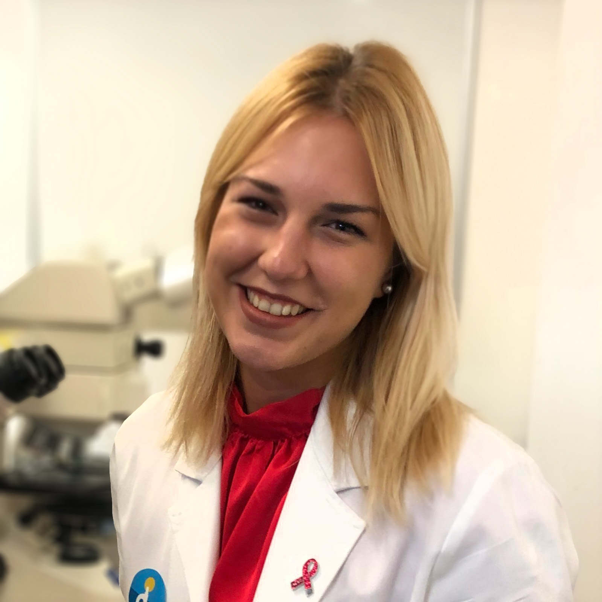
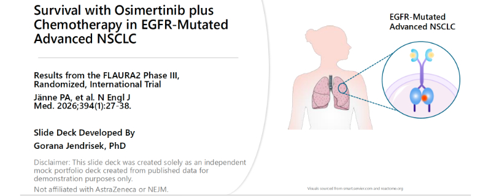
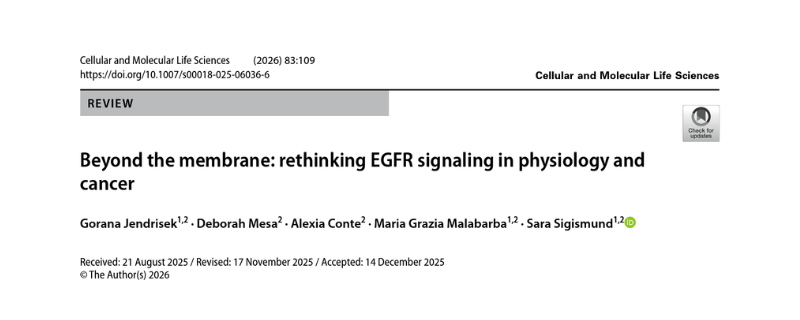
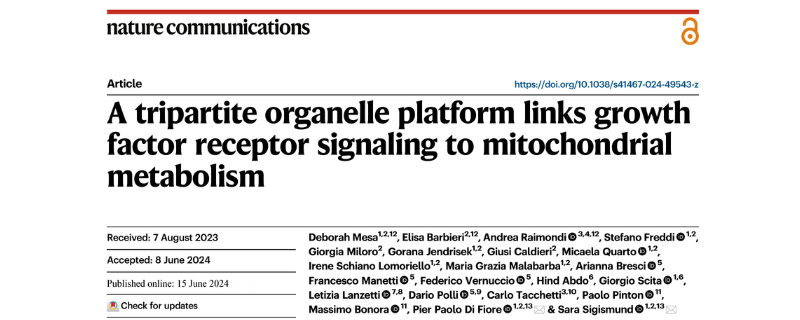
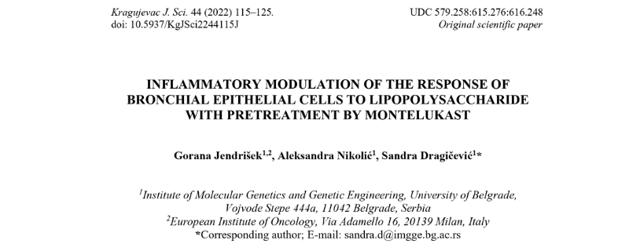
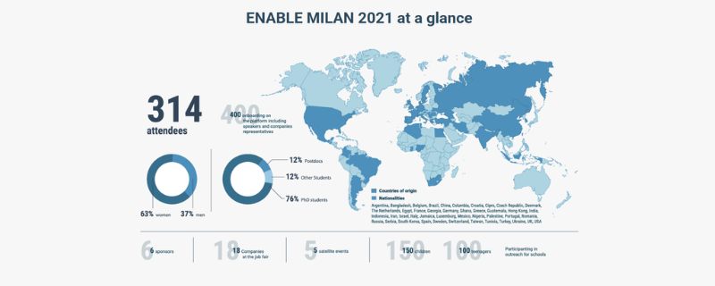
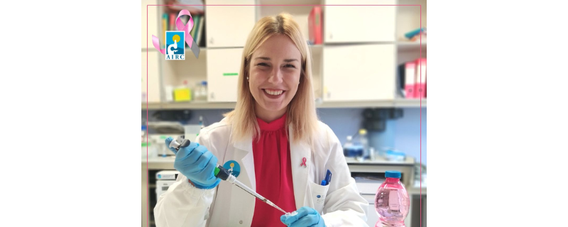
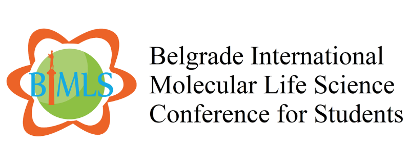
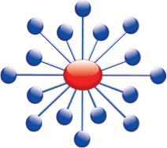

I am a Scientific and Medical Writer with over 7 years of experience in biomedical research. I specialize in translating complex scientific data into clear, engaging, and accurate content, as well as narratives for diverse audiences. With a deep specialization in molecular oncology, I combine rigorous analytical skills with a focus on making science relatable and impactful for the people it serves. My goal is to bridge the gap between academic complexity and accessible, compliant communication to ensure every scientific breakthrough reaches its audience with clarity and precision.

As an independent portfolio project, I developed a comprehensive slide deck summarizing the FLAURA2 Phase III randomized trial. I synthesized complex clinical data into clear, visually engaging slides to effectively communicate both the treatment's efficacy and its adverse event profile.

As first author, I led the review in which we explored how EGFR integrates biochemical and mechanical signals to inform future cancer therapies. I led the writing and submission processes, performing rigorous evidence synthesis to clarify conflicting data and revising the complete text for final publication.

This impactful study advanced our understanding of the molecular mechanisms behind EGFR non-clathrin endocytosis. As part of my PhD research, I designed and performed experiments demonstrating that the non-clathrin pathway's physiological impact extends beyond EGFR to other receptors like MET.

During my Master's project, I investigated whether montelukast pretreatment effectively modulates inflammatory responses in bronchial cells. As first author, I led the experimental work, drafting, and editing, actively overseeing the rigorous peer-review process until its successful publication in a scientific journal.

As a Scientific Organizing Committee member, I contributed to event organization, from theme selection to newsletter finalization. Trained by the Scienseed agency, I collaborated to manage digital content, applying their strategic guidance and graphic assets to execute successful web and social media campaigns.

I authored a competitive research proposal and successfully secured a 3-year AIRC fellowship focusing on cancer impact. The proposal featured a highly detailed research plan, milestone Gantt charts, and robust contingency strategies based on preliminary data and established scientific literature.

As a core member of the Organizing Committee, I managed attendee registration and provided direct support for participant inquiries. Additionally, I maintained active digital communications by updating the official conference website and social media channels to ensure a seamless event experience.
Translating complex data into compelling, accurate, and audience-tailored scientific narratives.
Member
European Medical Writers Association (EMWA)

ICH-GCP Certified (2026)
NIDA Clinical Trials Network
Public Engagement
Volunteer for DNA Day & Researchers'
Night
I am available for collaborations, medical writing projects, and consulting.
Back to top